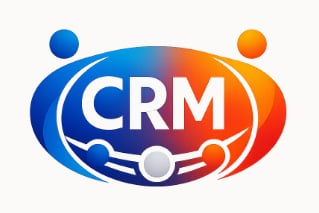
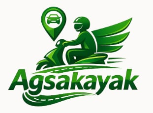

Hello, I'm Iann Godwin F. Surat
Detail-oriented IT Professional with advanced technical capabilities in hardware & software diagnostics, network maintenance, infrastructure administration, and creative software engineering. Passionate about empowering efficiency through automation where data meets precision.
Iann Godwin F. Surat
San Fernando City, La Union
Equipped with tools and frameworks spanning modern software engineering, creative design, and robust infrastructure systems.
Scroll through my hands-on enterprise IT background.
- Installed and configured core computer hardware and software systems.
- Executed complex hardware, printer, and software troubleshooting for end-users.
- Conducted structured user onboarding and training sessions for enterprise software.
- Performed internet and network connectivity diagnostics to ensure uptime.
- Managed website updates, database configurations, price tagging, and document printing.
- Engineered structural prototypes including Prototype CRM Automated records management system
- Handled layout visual design, website maintenance, and digital marketing outreach.
- Administered web digital content management workflows.
- Handled creative social media asset creation (photo & video editing for Facebook, TikTok, Instagram).
- Developed structural prototypes including Prototype ARMMS Automated records management system
- Completed intensive practical web development tasks and database tracking assignments.
“Empowering efficiency through automation — where data meets precision.” Systems built to simplify record handling, enhance accuracy, and streamline operations.

Customer Relationship Management system showcasing advanced web development, database integration, and pipeline tracking skills.
A civic tech project engineered for community resilience, safety tracking, and emergency coordination.

“Ride smart, go green — Agsakayak connects you to your destination.” A modern local transport platform inspired by Grab and Angkas.
Endless runner featuring abilities, obstacles, and fast-paced survival gameplay developed for Mobile & PC.
Highlighting my video editing and post-production skills using Adobe Premiere Pro with high-octane gaming plays.